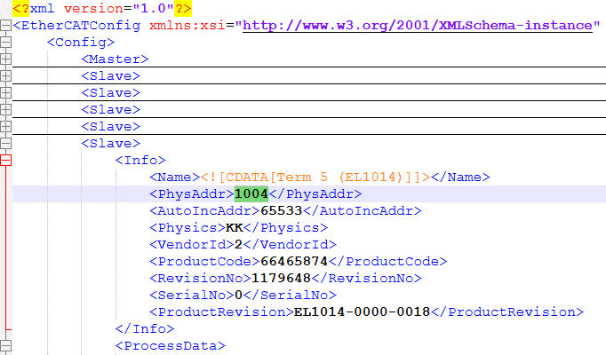
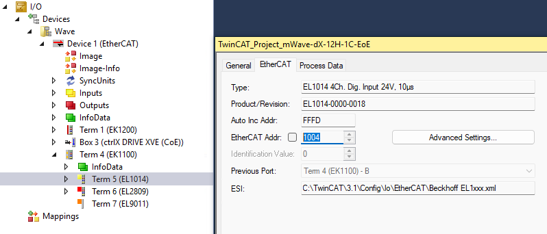

EtherCAT SubDevice Emulator - Object
EtherCAT SubDevice Emulator - Object — Provides access to the object dictionaries of the emulated EtherCAT subordinate devices
Description
This block provides an interface to the objects defined in the EtherCAT network information (ENI) file. Use one block for each object you want to access from Simulink. Read the object's value using the block's output ports. Write the object's value using the block's input ports. On the network side, the remote EtherCAT main device reads and writes the objects via service data object (SDO) communication.
![[Note]](images/note.png) | Note |
|---|---|
Use the extendEni function to copy object information from EtherCAT subordinate information (ESI) files to the initial ENI file and create an extended EtherCAT network information (EXI) file. Only when using EXI files will the emulator host objects for remote access and access from Simulink. |
Ports
- Data
The data that should be written to the local object. The port inherits the data type and the dimensions from the Init Value parameter. This port is simply a buffer. The length to be written can be less than the port size and be defined by the Length input port.
Data type: Fundamental data types from boolean to double are supported as well as dimensions from scalar values to vectors.
- Enable
The block writes data to the object as long as this input port is TRUE.
Best practice is to set the block's sample time to a higher rate (like 1 ms) and trigger the Enable input port at a lower rate. This allows event-based writing of the value as well as immediate updates of the output ports.
Data type: boolean
- Length
The actual size of the data that should be written to the object, specified in number of bytes.
If enabled by the Extended Interface parameter, the port limits the size of the data to be written to the object. In this case, the block writes a subset of the signal connected with the Data input port.
If disabled, the entire signal connected with the Data input port will be written to the object.
If the data size that remote EtherCAT devices want to read exceeds the size last written, the emulator replies with the current data size.
Data type: uint32
- Data
Outputs the current value of the object. The port inherits the data type and dimensions from the Init Value parameter. This port is just a buffer. Depending on the size of the data that was last written to the object, the port fills up the buffer with zeros. The Length output port outputs the actual size.
Data type: Fundamental data types from boolean to double are supported as well as dimensions from scalar values to vectors
- Status
A rising or falling edge indicates a completed write operation. The object's value was either written by the block's input ports or by a write request from the remote EtherCAT main device.
If this output does not change, the write operation is still in progress or the block is idle.
Data type: uint32
- Length
The size of the data that was last written to the object. Defined in number of bytes. As remote EtherCAT devices are allowed to write less than the default size, the actual size can be less than the size of the Data output port.
Data type: uint32
Parameters
- Module ID
This ID defines the link to the corresponding Setup block
- Interface ID
Enter the Interface ID of the corresponding Setup block.
- Device Address
Enter the so-called physical address of the device to which the signals belong. You can find the address in the ENI file and the EtherCAT configuration tool.


- Index
Enter the index of the object. Valid values are between 0 and 0xFFFF.
- Sub-Index
Enter the sub-index of the object. Valid values are between 0 and 0xFF.
- Init Value
The default value of the object. The Data output port outputs this value until the first write request is received from the remote EtherCAT main device. The other way round, the EtherCAT main device reads this value as long as the object is not overwritten by the signal connected to the Data input port.
Data type: Fundamental data types from boolean to double are supported as well as dimensions from scalar values to vectors.
- Operation
This parameter defines the local operation on the object's value. You can read or write the value, or do both. Write enables the input ports. Read enables the output ports.
- Extended Interface
If selected, the block shows the Enable input port, the Status output port and the Length input and output ports. Otherwise, the ports are hidden.
- Sample Time
Defines the base sample time at which this driver block gets its sample hit. This parameter can also be set to -1 for inherited sample time. The units are in seconds.
![[Caution]](images/caution.png)
Caution All blocks that interface with the same I/O module must have identical sample times.